Johnson & Co Enterprise has expanded its operations and is relocating to a new building. The new facility requires a complete network infrastructure to support 600 employees across multiple departments. This document outlines the step-by-step implementation of the network design using Cisco Packet Tracer.
The network will follow a hierarchical model with redundancy. The key components include:
Network Diagram:
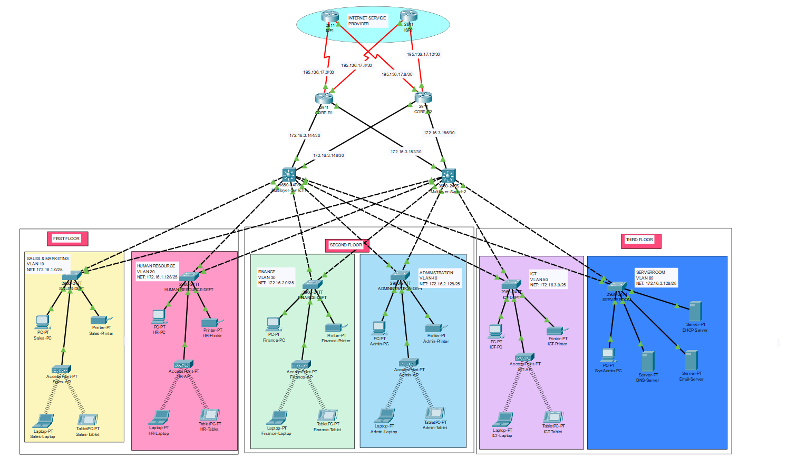Base Network: 172.16.1.0
Public IP Addresses: 195.136.17.0/30, 195.136.17.4/30, 195.136.17.8/30 and 195.136.17.12/30
| Department | Network Address | Subnet Mask | Host Range | Broadcast Address |
|---|---|---|---|---|
| Sales | 172.16.1.0 | 255.255.255.128/25 | 172.16.1.1 – 172.16.1.126 | 172.16.1.127 |
| Human Resource | 172.16.1.128 | 255.255.255.128/25 | 172.16.1.129 – 172.16.1.254 | 172.16.1.255 |
| Department | Network Address | Subnet Mask | Host Range | Broadcast Address |
|---|---|---|---|---|
| Finance | 172.16.2.0 | 255.255.255.128/25 | 172.16.2.1 – 172.16.2.126 | 172.16.2.127 |
| Administration | 172.16.2.128 | 255.255.255.128 | 172.16.2.129 – 172.16.2.254 | 172.16.1.255 |
| Department | Network Address | Subnet Mask | Host Range | Broadcast Address |
|---|---|---|---|---|
| ICT | 172.16.3.0 | 255.255.255.128/25 | 172.16.3.1 – 172.16.3.126 | 172.16.3.127 |
| Server Room | 172.16.3.128 | 255.255.255.240/28 | 172.16.3.129 – 172.16.3.142 | 172.16.1.143 |
| No. | Network Address | Subnet Mask | Host Range | Broadcast Address |
|---|---|---|---|---|
| Multilayer SW1 - Core R1 | 172.16.3.144 | 255.255.255.252/30 | 172.16.3.145 – 172.16.3.166 | 172.16.3.147 |
| Multilayer SW1 - Core R2 | 172.16.3.148 | 255.255.255.252/30 | 172.16.3.149 – 172.16.3.150 | 172.16.3.151 |
| Multilayer SW2 - Core R1 | 172.16.3.152 | 255.255.255.252/30 | 172.16.3.153 – 172.16.3.154 | 172.16.3.155 |
| Multilayer SW2 - Core R2 | 172.16.3.156 | 255.255.255.252/30 | 172.16.3.157 – 172.16.3.158 | 172.16.3.159 |
This section provides a detailed step-by-step guide on how to implement the Johnson & Co network.
Use Cisco Packet Tracer to add each department's routers, multilayer switches, access switches, and end devices.
Core Router One Configuration
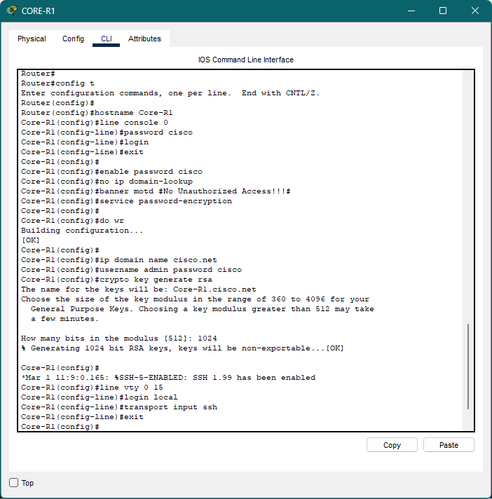Core Router Two Configuration
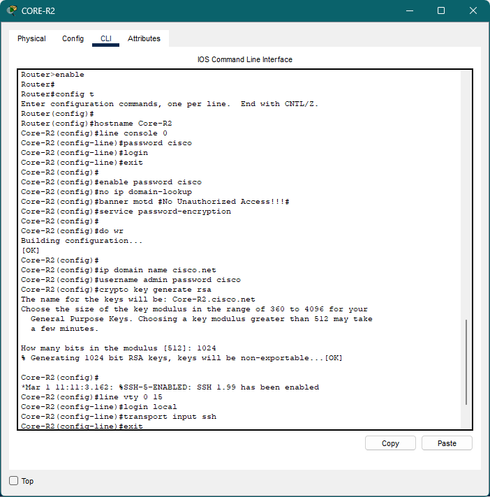Multilayer Switch One Configuration
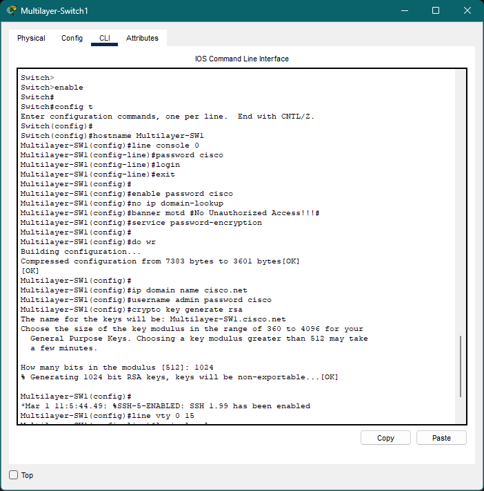Multilayer Switch Two Configuration
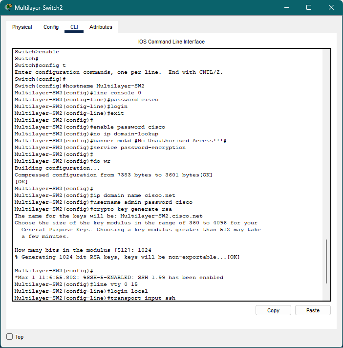Sales Department Switch Configuration
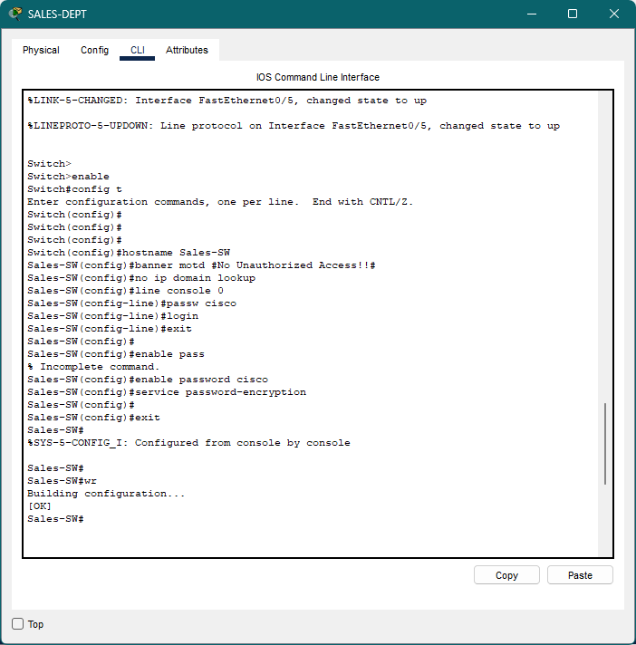Human Resource Department Switch Configuration
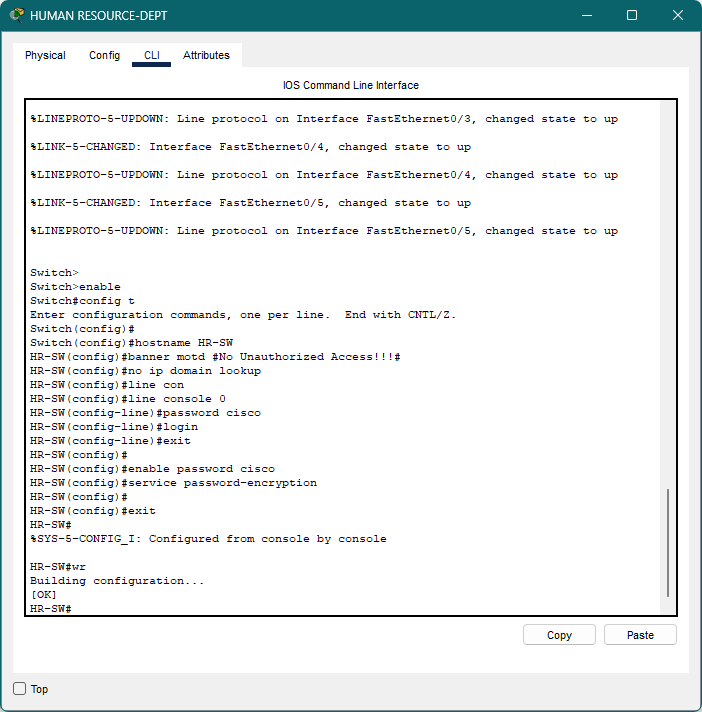Finance Department Switch Configuration
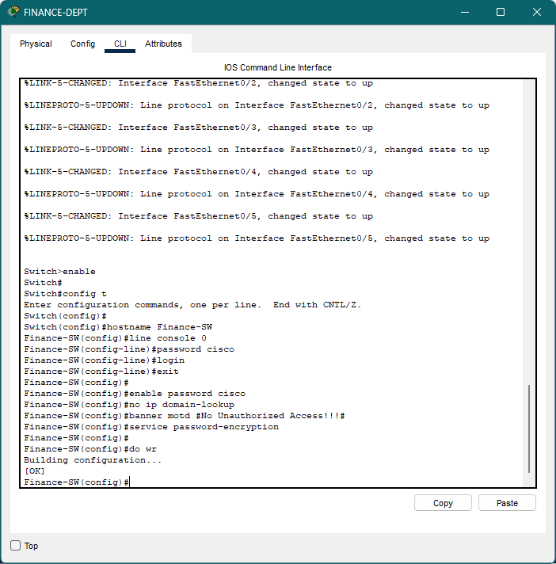Administration Department Switch Configuration
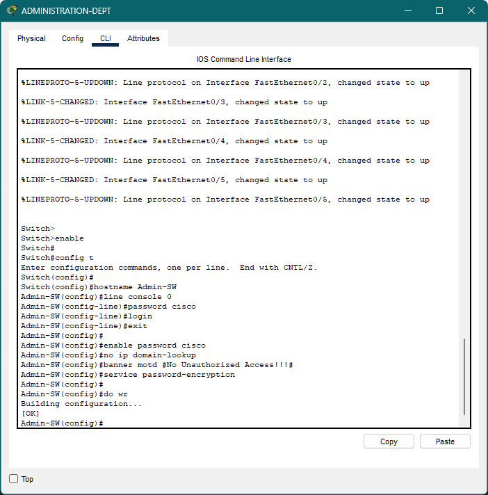ICT Department Switch Configuration
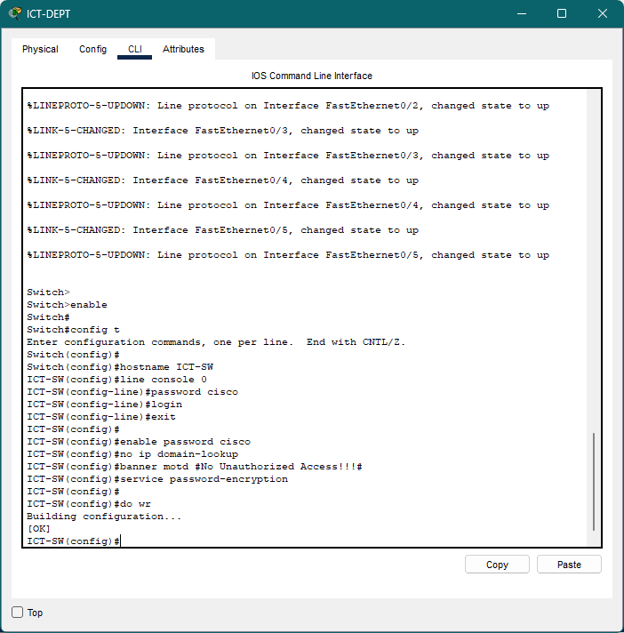Server Room Switch Configuration
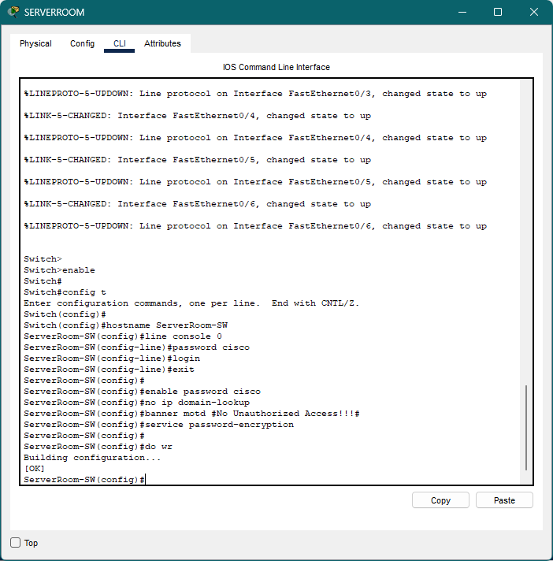Create VLANs for each department and assign ports accordingly on multilayer switches.
vlan 10
name Sales
vlan 20
name HR
vlan 30
name Finance
vlan 40
name Admin
vlan 50
name ICT
vlan 60
name Server_Room
Enable inter-VLAN routing on multilayer switches to allow communication between different VLANs.
interface vlan 10
ip address 172.16.1.1 255.255.255.128
no shutdown
Set up a DHCP server to dynamically assign IP addresses to end devices.
Configure OSPF as the routing protocol to ensure network scalability and efficiency.
router ospf 1
network 172.16.0.0 0.0.255.255 area 0
Enable SSH for secure remote access, configure port security for critical departments, and implement ACLs.
SSH Configuration on all routers and Layer 3 switches
hostname CoreR1
ip domain-name johnsonco.local
crypto key generate rsa
username admin privilege 15 password Cisco123
line vty 0 4
transport input ssh
login local
Verify VLAN configurations, test DHCP assignments, check inter-VLAN connectivity, and ensure internet access.
Testing Results Screenshot:
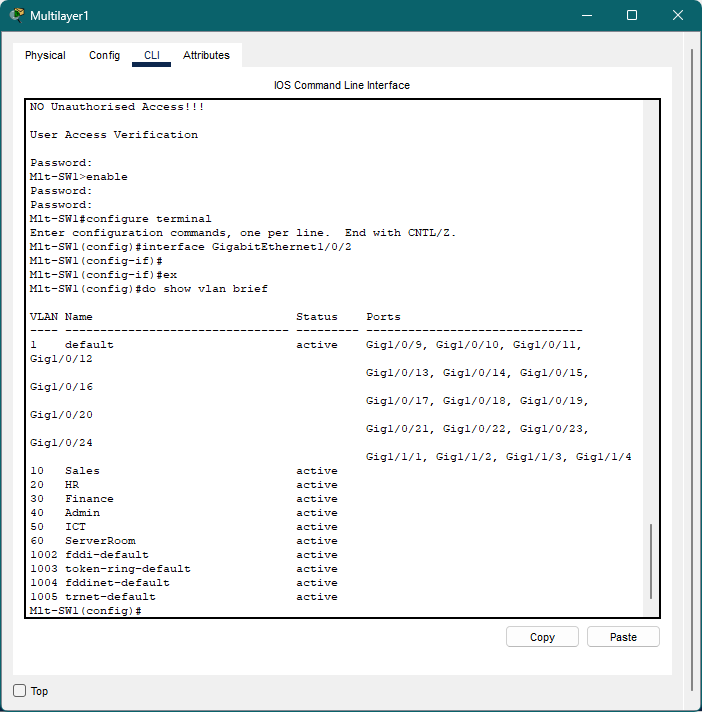 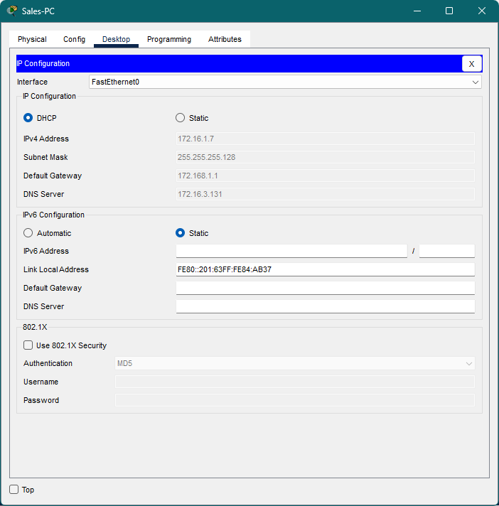This implementation ensures a secure, scalable, and efficient network for Johnson & Co Enterprise. With VLAN segmentation, OSPF routing, redundancy at core layers, and strict security policies, the network is designed to meet current and future business needs.